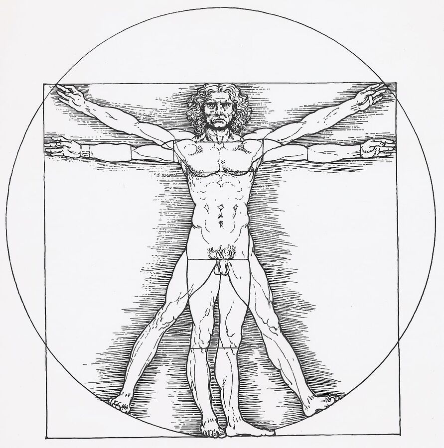

Diz & sırt
İtiraf etmeliyim: 2021 iyi bir yıl değildi ve fiziksel olarak hiç bu kadar yıpranmamıştım. Bunu gerçekten Corona'ya bağlıyorum; 2020'de önce kapalı spor salonları, sonra salonlardaki belirsiz hijyen durumu yüzünden neredeyse hiç fitness antrenmanı yapmadım. Önceki yıllarda koşu ve fitness arasında hep iyi bir denge kurmuştum; 2020'de ise neredeyse hiç salona gitmedim. Bunun yerine daha çok dışarıda koştum. Yıllık koşu mesafem tahminen 600 kilometreyken, 2020'de bunu ikiye katlayıp 1.200 kilometreye çıkardım; en yoğun aylar yıl sonuna doğruydu. Ocak ve şubat 2021'de tempo sabit kaldı ve 2021 için 2.000 kilometrelik iyi bir gidişattaydım. Ama sonra hastalandım; önce sol dizimde, ardından karın altında ağrılar başladı. Bütün yaz bununla uğraştım ve ya hiç ya da çok az koşabildim.
Asıl neden muhtemelen fitness antrenmanının eksikliğiyle asfaltta yoğun koşunun birleşmesi. Uyluk ve baldır kaslarım kısalmış; bu da iç menisküse zarar vermiş. Karın altındaki oldukça kötü ağrılar, artık 50 yaşında bir erkek olarak elbette beni en çok endişelendiren şeydi. Neyse ki en kötü şüphe ortadan kalktı. Ağrıların 3. ve 4. bel omurlarından kaynaklandığı düşünülüyor. Bu da gövde (core) bölgesinde kas eksikliğine işaret ediyor. Fitness antrenmanı yapmamanın bedelini ödedim.
Yani 2021'de neredeyse hiç koşmadım. Zar zor yıl sonunda 700 kilometreye ulaştım. Bunun bir nedeni de aralık başında arkadaşım Ralf ile Arjantin'den Şili'ye 100 kilometrelik bir koşu olan „El Cruce“ koşusuna katılmak istemem ve orada tamamen batmamak için antrenman yapmak zorunda olmamdı. Ama zaman zaman ancak ağrıyla yürüyebiliyordum ve en geç bu noktada El Cruce'yi iptal etmek zorunda kaldım.
Genel durum
Kasım sonu/aralık başındaki son check-up'ta doktorum benden memnundu. Tüm değerler aslında yolunda, sadece orada burada biraz ayar gerekiyor. Diz için kasların kısalmasına karşı esneme egzersizleri verildi. Tekrar koşabiliyorum, ama şimdilik yavaş başlıyorum.
Noel ve yılbaşı civarındaki ziyafet günlerinden sonra 79 kilo geliyorum; şu anki düşük kas seviyem için bu 1-2 kilo fazla. Bunu tutarlı bir antrenmanla kas kütlesine dönüştürmek istiyorum. Eşim bana Noel'de kişisel antrenör dersleri hediye etti. Antrenör olmadan yeterince disiplinli olamıyorum. Sabahları birkaç egzersizden oluşan bir rutinim var ama bu elbette yetmiyor.
Bir diğer kalıcı sorun da vücut yağ oranım. Zayıf bir yapım olmasına rağmen %25 ile aralığın üst ucunda. %20'ye düşürebilirsem çok mutlu olurum. Bu yüzden şeker tüketimimi ciddi şekilde azaltacağım. Çikolata ve tatlıyı çok sevdiğim için bu bana zor gelse de. Karaciğer yağlanma değerlerim son yıllarda hiç tam iyi olmadı ve babam da sonuçta bu yüzden erken vefat etti.
Şu anda bir de sinüs enfeksiyonu taşıyorum. Bronşlarım da nedense hep tıkalı. Nisan ortasına kadar havanın gerçekten güzelleşmesi beklenmediği için bunu nasıl yeneceğim henüz belli değil. Ama azaltılmış şeker tüketimi ve daha sağlıklı bir yaşamın buna katkı sağlayacağını umuyorum. Tırmanışta, özellikle 4.000 metrenin üzerindeki bölümlerde, akciğerlerin tamamen açık olması ve enfeksiyon olmaması büyük avantaj olurdu.
Hedefler
Kısacası nisan ortasına kadar hedeflerim şunlar:
- Kiloyu 79'da tutmak
- Vücut yağ oranını belirgin şekilde, yaklaşık %20'ye düşürmek
- Aylık 120-150 kilometre koşu
- Daha iyi kondisyon
- Sağlıklı olmak
Hedefleri yazdığıma göre artık bunlarla ölçülmem gerekiyor. Merakla bekleyelim.